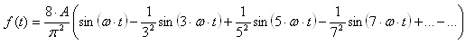

Bei einem Funktionsgenerator für elektriesche Spannungen kann man verschiedene Signale einstellen: Rechteck, Dreieck und Sinus. Mit diesen Signalen lassen sich elektrische Schaltungen analysieren. Bei der Regelungsbaugruppe 611U kann man auf den Sollwertkanal für die Drehzahl von elektischen Antrieben auch diese 3 Signale geben. Damit läßt sich der elektische Antrieb oder auch die dahinter befindliche Mechanik analysieren. Dieses Seite befaßt sich mit den Frequenzanteilen dieser 3 Signale. Nach Fopurier lassen sich periodische Sigale als Überlagerung von Sinussignalen darstellen. In den folgenden Kapiteln werden diese Testfunktionen als Sollwerte für simulierte Systeme verwendet. In der linken oberen Ecke ist die Testfunktion schwarz eingezeichnet. Die Näherungsfunktion ist rot eingezeichnet. Darunter befindet sich eine Grafik mit der aktuell hinzugefügten Sinusfunktion. In der rechten Ecke befindet sich das Frequenzspektrum. Die Grundschwingung und die vielfachen davon. Man kann in einer Auswahlbox zwischen Rechteck, Sinus und Dreick wählen.
Näherungsformel für das Rechtecksignal:
Näherungsformel für den Sinussignal:
Näherungsformel für das Dreiecksignal:
Man kann sich auch die Fouriersynthese als Musik anhören.
Autor: Harald Schellinger